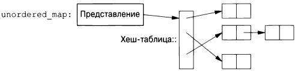
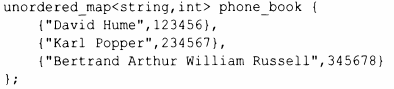
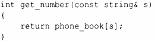
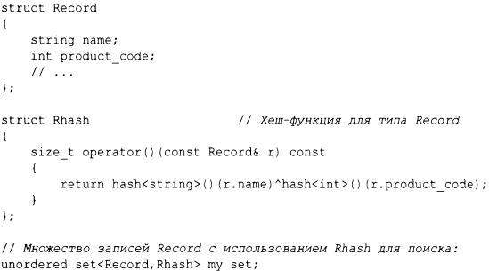
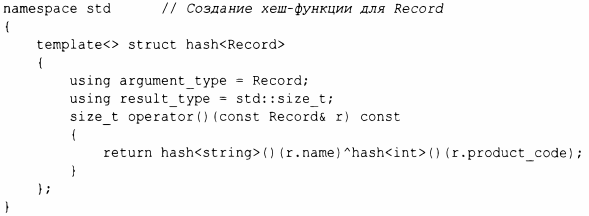

⇐11.4 map 11.6 Обзор контейнеров⇒
Стоимость поиска в map - О (log (n)), где n - количество элементов в отображении. Это весьма неплохо. Например, для отображения с 1 ООО ООО элементов мы выполняем только около 20 сравнений и косвенных обращений, чтобы найти искомый элемент. Однако во многих случаях можно добиться лучшего, используя хеширование, а не сравнение с помощью функции упорядочения, такой как оператор <. Хешированные контейнеры стандартной библиотеки называются "неупорядоченными", потому что не требуют функции упорядочения.
Например, мы можем использовать unordered_map из заголовочного файла <unordered_map> для нашей телефонной книги:
Подобно map, в случае unordered_map также можно использовать индексацию:
Стандартная библиотека предоставляет хеш-функцию по умолчанию для строкового типа string, а также для других встроенных типов и типов стандартной библиотеки. При необходимости вы можете предоставить собственную хеш-функцию (§5.4.6). Вероятно, наиболее распространенная потребность в "пользовательской" хеш-функции возникает, когда нам нужен неупорядоченный контейнер одного из наших собственных типов. Хеш-функция часто предоставляется в виде функционального объекта (§6.3.2). Например:
Проектирование хороших хеш-функций - это искусство, требующее знаний данных, к которым они будут применяться. Часто простым и эффективным способом является создание новой хеш-функции путем объединения существующих с использованием побитового исключающего или ( л ).
Мы можем избежать явной передачи хеш-операции, определяя ее как специализацию hash стандартной библиотеки:
Обратите внимание на отличие map и unordered_map.
При наличии хорошей хеш-функции unordered map при больших размерах оказывается куда быстрее, чем map. Однако в наихудшем случае поведение unordered _ map с плохой хеш-функцией оказывается гораздо хуже, чем поведение map.